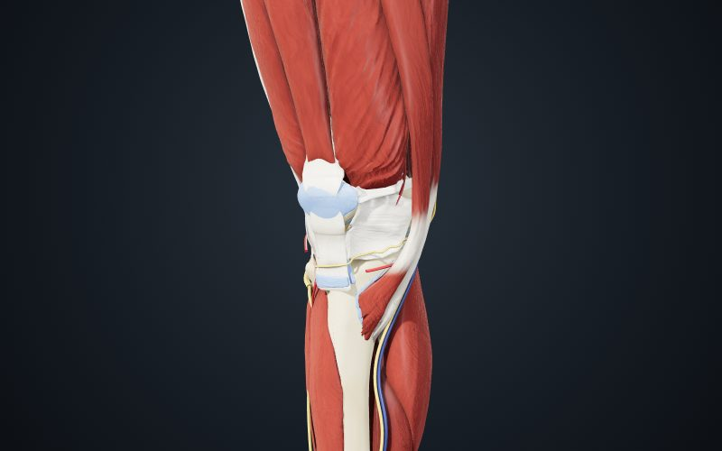
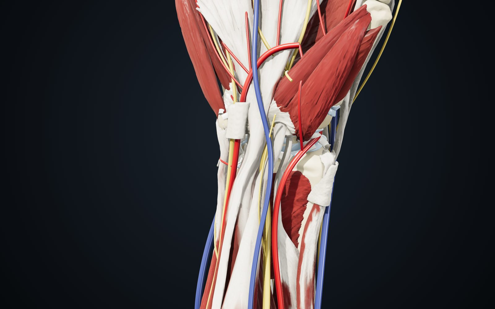

Indice delle tavole
-
Arto inferiore

Vista anteriore, lato destro Ginocchio destro
Ossa, cartilagini, menischi, legamenti, tendini, borse, muscoli, vasi e nervi, con viste standard ed etichette delle strutture.
-
Arto superiore

Vista volare, lato destro Polso destro e dito
Carpo, legamenti e TFCC, retinacoli, compartimenti estensori, tunnel carpale e canale di Guyon. Sezione separata per il dito medio, con tendini flessori e pulegge.